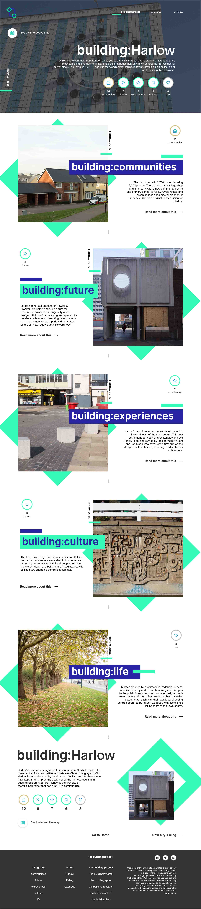
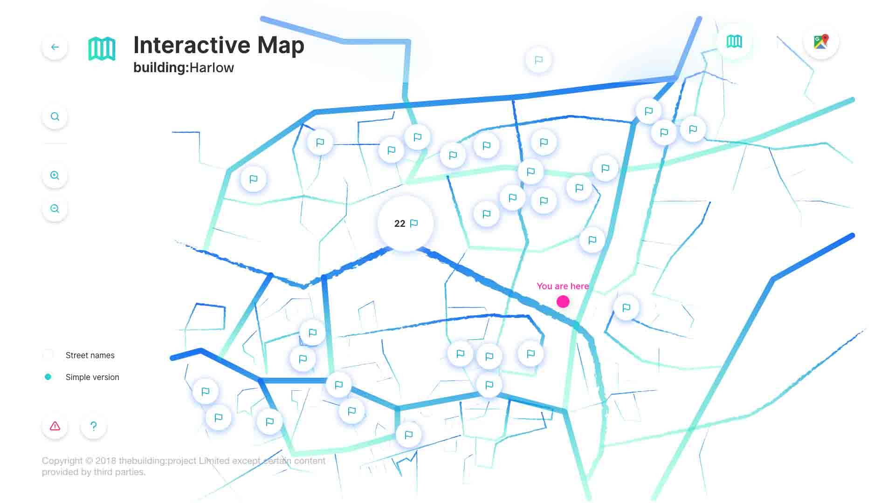

The building:project is one of the first member-based city networks dedicated to promoting architecture, culture and lifestyle of its members through thebuilding rating system and providing them with recognitions and events such as thebuilding:awards.
Web concept for the website:

Click here to see all designed concepts of the website
Interactive Map (Digital Graphics Task)
